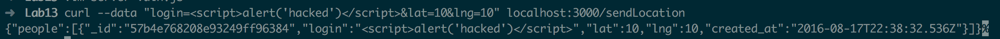
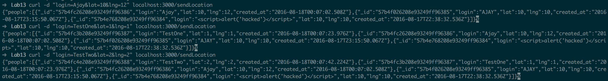

I am testing a web application for possible security issues. The application is similar to FourSquare, but is clearly Not FourSquare. <\n> The app has users log in with a login name, their latitude, and their longitude. When the index is loaded, a list of users is dislayed with their login, lat, lng, and the date.
The web application uses Node js Express and MongoDB to create a server and database.
I used blackbox and whitebox testing - that is, I attacked the site with and without looking at the source code. I primarily used curl to test the vulnerabilities by sending POST requests with various data. I also used query strings to modify data when sending GET requests.
I found a variety of vulnerabilities that center around the poor handling of submitted data. The server fails to check the much of the submitted data, so I was able to perform attacks that inject data to the server and create cross-site scripting. Additionally, the NoSQL database does not protect the data, so users can view potentially sensative data (like another user's exact GPS location) by adding a few characters to the url.
/sendLocations POST route
High. Hackers can embed any javascript code, including dangerous and malicious code. The code is then seen by everyone who accesses the website! Not only is the database at risk, but everyone who views the site.
By using curl to send data to the /sendLocations POST route, I was able to embed javascript code into the site. The source code did not check to make sure that the login field was a string, and it did not escape the entry to get rid of tags, so I was able to add a javascript alert to the website.
Escaping the submitted data would fix the problem. If > and < were changed to & gt and & lt, the script would not be executed
/sendLocations POST route
High. Since the index page displays the database, any corrupt data is received by the user when the user opens the web app. Hackers can also inject files that will corrupt the data or steal the data.
Once again, I exploited the vulnerable POST route. Using curl, I was able to create multiple logins with fake login names, latitudes, and longitudes. When a user now visits the website, they see my fake logins. This exploit undermines the entire purpose of the web application.
Sanitizing the POST route would fix the problem.
/checkins.json GET route
Medium-High. Allows the user the display all of the data for all accounts. If the data stored in checkins.json is seen as very sensitive, then this would be considered an extremely severe issue.
I added a query to the end of the /checkins.json route in my browser that displays everything in the database where the login is not an empty string. By adding ?login[$ne]='', the mongo database searches for every login that is not an empty string, and displays the document. The hacker could add any other mongo code to the login area of the query to corrupt the data.
Note: ?login[$ne]='' becomes ?login[$ne]=%27%27 because of url encoding.
Santizing the GET route would fix the problem. It would prevent the user from adding [$ne], or any other Mongo code, to the GET route.
The web application fails to secure itself against the most common attacks. By simply sanitizing each route, the web app would become much less vulnerable. No major changes need to be made to the database or server. Given that none of the data stored in the database is extremely sensitive (credit card info, social security numbers, etc.), the website's vulnerability does not pose much of an immediate threat. However, the website could become a threat if one person simply injects a malicious script into the POST request. Fixing the security issues would not take much time at all!